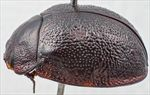
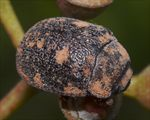
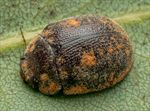
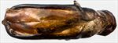
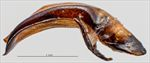
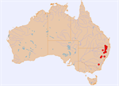
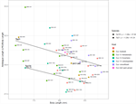

Click on images to enlarge


Male, Mole River, N.E. New South Wales


Female, Emmaville, N.E. New South Wales


Male, Amiens, S.E. Queensland


Aedeagus, dorsal view (Pikedale, S.E. Queensland)


Aedeagus, lateral view (Pikedale, S.E. Queensland)


Distribution


Plot of LPE/BL vs BL for Ta170 and Ta21
Name
Trachymela sp. Ta170
Reference specimen
2018-181, Bingara, NE New South Wales.
Adult Description
Length: ♂ 7.3–8.6 mm (n=19), ♀ 7.5–9.5 mm (n=26).
Colouration:
- Head: Often uniformly dark-brown, sometimes with parts or (rarely) all of clypeus and/or area adjacent to anterior of eyes black, labrum usually yellow-brown, mandibles with black tips, sometimes completely black; antennomeres 1–3 light-brown, 4–6 grading towards dark-brown or black, 7–11 concolorous with 6, usually with proximal extreme paler.
- Pronotum: Disc dark-brown or (rarely) almost black, slightly darker than rear of head, with lateral marginal region usually lighter in shade (similar to head) becoming dark brown (even black) at extreme margin.
- Scutellum: Black.
- Elytra: Dark-brown, concolorous with or fractionally darker than pronotal disc with small fractionally darker or black raised interstices scattered about the surface, usually a few small indistinct flecks of slightly lighter colour are present, most frequently along elytral margin, in middle of antero-median depression and in the area behind it; punctures are concolorous with interstices, humeral callus concolorous with surrounding area.
- Venter & Legs: Venter black or very dark reddish-brown, head, lateral extremities of prosternum and abdominal ventrites sometimes a slightly lighter shade, elytral epipleura not black, rarely partially black.
- Cuticular Wax: Light brown to orange-brown, with a very patchy distribution – concentrations are present in two patches on the head, along the lateral margins of the pronotum, in a thin band (usually interrupted near middle) along lateral margins of elytra (in the sub-marginal sulcus), 2 small patches at base of each elytron and another (slightly larger) in the centre of antero-median depression, smaller patches arranged roughly in 2–3 longitudinal lines from antero-median depression towards apex; elsewhere the cuticular wax is very thinly scattered.
Morphology:
- Shape: In lateral view, quite evenly rounded over much of surface until close to apex and relatively flat (H/L: ♂ 0.39–0.45, ♀ 0.41–0.46), where radius of curvature increases noticeably, greatest height a little in front of or near middle of elytral margin.
- Head: Punctures relatively fine (pd ≈ 1.5–2× ef) and quite evenly and densely distributed. Antennae moderate in length (AL/BL: ♂ 37–43%, ♀ 32–38%), filiform.
- Pronotum: Almost evenly curved transversely to near lateral edges where it becomes quite markedly explanate, foveal depression absent or very weak, epidermis near centre usually slightly elevated in a broad circular area, discal area with surface smooth to very slightly uneven, nitid, and puncturation clearly impressed with punctures similar in size to those on head, quite evenly to very slightly unevenly distributed and relatively dense (spacing ≈ 1.5–2 pd), becoming noticeably coarser towards lateral margins. Front margins join much thinner lateral margins in a smoothly rounded right-angle, with lateral margin then curving smoothly and gradually towards rear margin and becoming much thicker from about middle, broadest about 2/3 of distance to posterolateral angle.
- Scutellum: Sparsely punctured with punctures usually slightly smaller and more (often much more) shallow than those on pronotum.
- Elytra: Surface smoothly curved throughout longitudinally, evenly or very slightly explanate transversely, antero-median depression very shallow, sometimes barely discernible, punctures surrounded by very convex interstices, closely spaced and rather evenly distributed, interstices are convex and give the surface a quite uniform granular appearance though never hiding punctures, they may be thickened in some places forming a few scattered and very small and inconspicuous elevated verrucae at their intersections, much finer punctures scattered over interstices, surface slightly more granular in posterior third due to closer spacing of punctures, elytral suture not carinate, posterior 20% of marginal area moderately to strongly concave, surface discontinuous under humeral callus. Vertical extension of epipleura relatively small (HCE/PW = 0.31–0.36).
- Venter: Prosternal process almost parallel or narrowing anteriorly, closed anteriorly, a very sparse scatter of setae usually present along prosternal process and on mesoventrite, a single long seta present on anterior, median and posterior trochanters; front edge of metaventrite beveled, flat.
Male Genitalia (Aedeagus):
- Dimensions: Short (LPE/BL = 27–30%).
- Dorsal view: Shaft approximately parallel-sided or very slightly sinuate with maximum width around middle of ostium (WPE = 0.30–0.33 × LPE) from where sides converge smoothly towards apex, tip triangular, dorsal surface lightly sclerotized, dorso-median channel present but often short and poorly defined, ostium relatively large with a clump of short setae at apical extreme.
- Lateral view: Shaft quite evenly and continually curved over almost whole length with curvature increasing slightly just before apex, tip deflexed, flagellum quite thin and straight on exit.
Immature Stages
Unknown.
Similar species
- Ta21: This species overlaps in range with Ta21 and they are often found in close proximity. The patterns of cuticular wax are similar in the two species. The most useful character (and the one used in distinguishing it from Ta21 for the purpose of this guide) is the colour of the inner epipleural surfaces. In Ta21 these are always completely black, those of Ta170 are brown (with a few exceptions that are partially black). There are some other differences, mostly relating to colouring: Ta170 does not have a black patch at the elytral summit and the front of the head is usually not black. Its aedeagus is very similar to that of Ta21 in shape, but it tends to be just slightly shorter (though there is some heterogeneity in that measure, indicating that the species is not well defined) and is usually slightly broader (though there is considerable overlap in that measure between the two species also). Almost all specimens of Ta170 have a tuft of short setae in the middle of the spatula, adjacent to the ostial opening, which seems to be less well defined (or much smaller?) in Ta21. This feature is at the limits of what is resolvable with the equipment available to the author, so was not used when determining the appropriate species for a specimen.
A specimen [2017-349] from Pikedale, west of Stanthorpe, illustrates the problems in differentiating between Ta21 and Ta170. Both species are abundant in this area, with Ta170 commonly found on species of the red-gum group such as E. blakelyi, while Ta21 is found there on boxes such as E. moluccana. This particular specimen has brown epipleura, its clypeus is also brown and it lacks a black patch at the elytral summit. These would clearly place this specimen with Ta170. In support of that determination, a patch of setae is clearly visible on the aedeagus, at the posterior of the spatula. However, the aedeagus LPE/BL ratio is 0.301, which more closely corresponds to ratios seen with similarly sized specimens of Ta21 (those of Ta170 rarely exceed 0.29 – see chart opposite). In addition, this specimen was found on a box species (almost certainly E. moluccana) which is more frequently associated with Ta21. - Ta202: A very similar species to Ta170, but with black epipleura. Its dorsal surface tends to be less rugulose than that of Ta170, but the aedeagus is similar in both shape and length.
Notes
- Taxonomy: This entity is a somewhat problematic grouping, very close to Ta21 and not well distinguished from it. It is very possible that it will turn out to be conspecific with Ta21. However, due to differences in aedeagus length and host preferences, they have been retained as separate groupings for the time being.
- Host Associations: Ta170 has been found predominantly on the red-gum group of Eucalyptus, such as E. tereticornis, E. blakelyi, E. dealbata, and E. prava. There are just a few records from "box-barked" eucalypts that are very likely Adnataria species (including E. albens).
Copyright © 2026. All rights reserved.